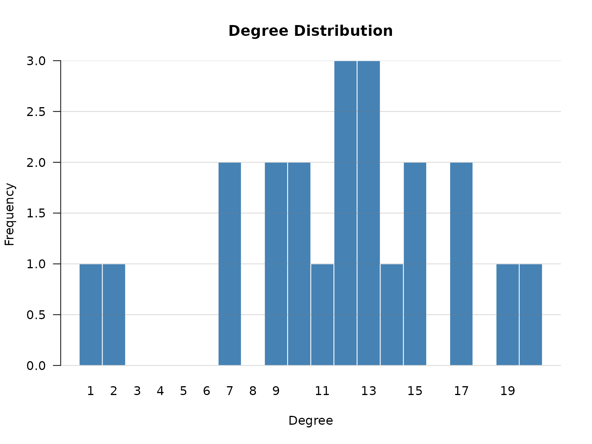
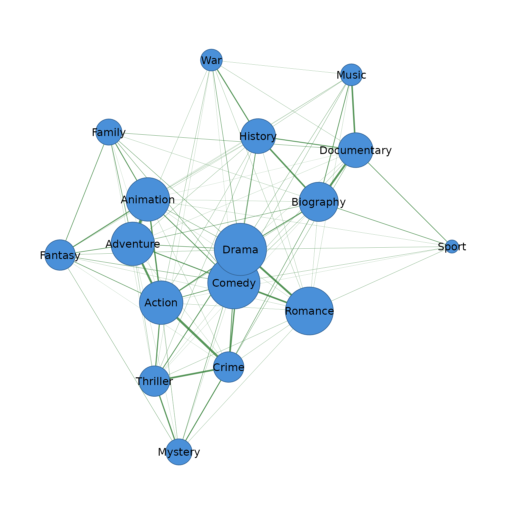
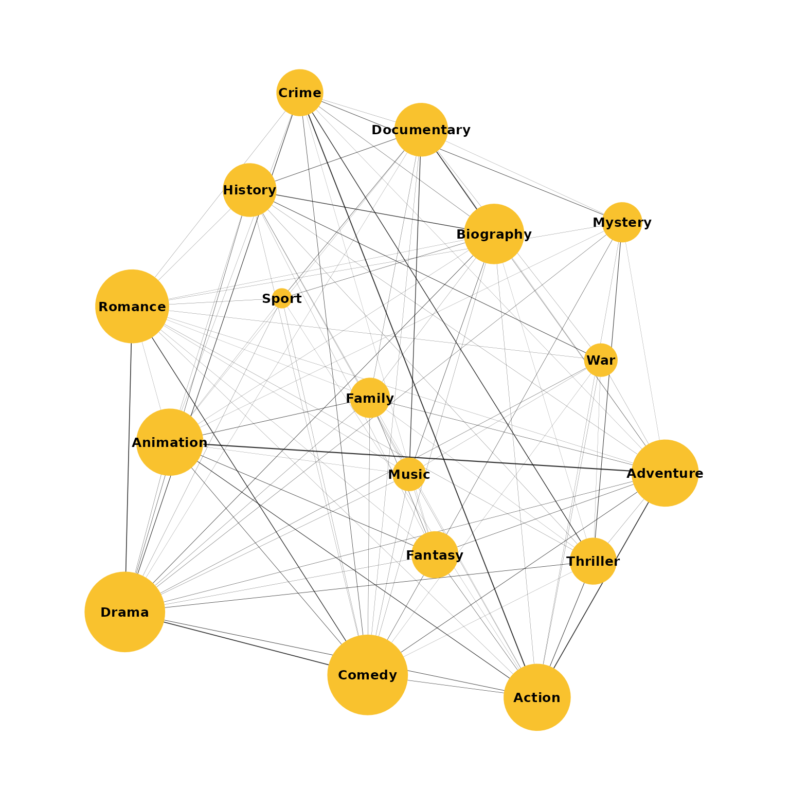
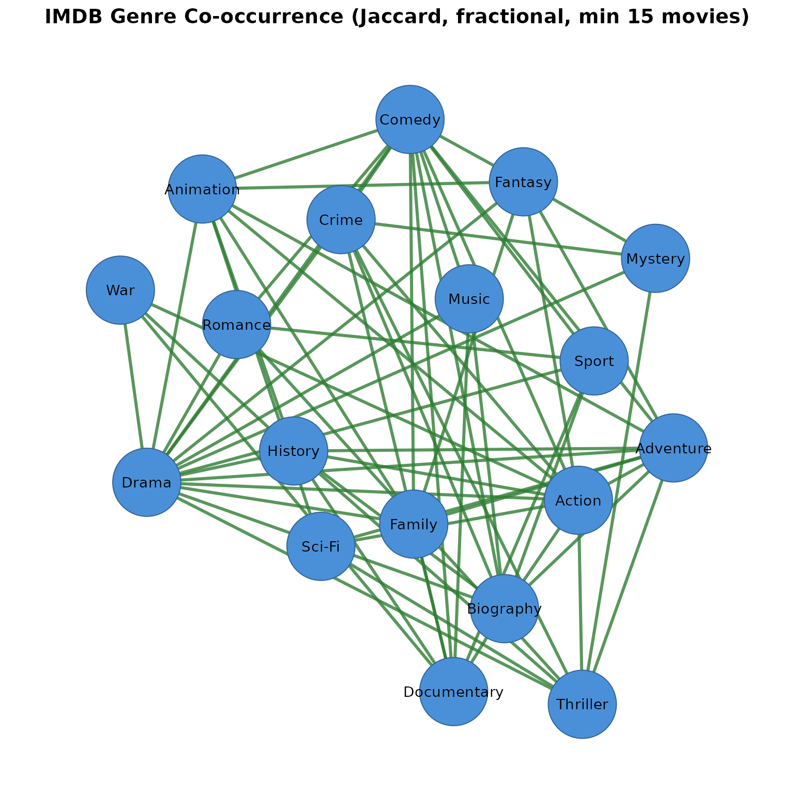

This tutorial demonstrates every feature of the cooccur
package using 1,000 highly-rated IMDB movies (rating
7.0,
1,000 votes, 1970–2024). We build genre co-occurrence networks, actor
collaboration networks, compare decades, apply different similarity
measures and counting methods, and export to Gephi, igraph, and
cograph.
Data
The dataset contains the title of the movie, the year and decade, the
genres (comma-separated), the average rating, the number of
votes, and the rating band
head(movies)
#> tconst primaryTitle startYear
#> 1 tt0118117 The War at Home 1996
#> 2 tt10534996 Josep 2020
#> 3 tt4686844 The Death of Stalin 2017
#> 4 tt0089957 Samaya obayatelnaya i privlekatelnaya 1985
#> 5 tt3469964 Blind Massage 2014
#> 6 tt7647198 Love and Shukla 2017
#> genres decade averageRating numVotes
#> 1 Drama 1990s 7.0 2733
#> 2 Animation,Biography,Drama 2020s 7.4 2340
#> 3 Comedy,Drama,History 2010s 7.3 126237
#> 4 Comedy,Romance 1980s 7.4 2521
#> 5 Drama 2010s 7.2 1804
#> 6 Comedy,Drama,Romance 2010s 7.2 12341. Genre co-occurrence (delimited field)
Each movie has a comma-delimited genres column. Genres
that appear in the same movie are connected. To analyze their
co-occurrence we need to call cooccurrence and specify the
field (column in the data) and the separator
(sep) that separates the values that co-occur, within the
same field.
cooccurrence(movies, field = "genres", sep = ",")
#> # cooccurrence: 22 nodes, 129 edges (1000 transactions)
#> from to weight count
#> Comedy Drama 159 159
#> Drama Romance 131 131
#> Crime Drama 91 91
#> Action Drama 71 71
#> Comedy Romance 63 63
#> Action Crime 59 59
#> Biography Drama 59 59
#> Drama Thriller 57 57
#> Action Adventure 44 44
#> Biography Documentary 44 44
#> # ... 119 more edgesDrama dominates because it’s the most frequent genre. Normalize with Jaccard to control for popularity:
library(cograph)
Net <- co(movies, field = "genres", sep = ",", similarity = "jaccard")
Gr<- as_cograph(Net, directed = TRUE)
cograph::degree_distribution(Gr)
Now the top edges reflect genuine affinity rather than just frequency.
Comparing similarity measures
Each measure surfaces different structure. Here are the top 3 pairs under each:
co(movies, field = "genres", sep = ",", similarity = "none", top_n = 3)
#> # cooccurrence: 4 nodes, 3 edges (1000 transactions)
#> from to weight count
#> Comedy Drama 159 159
#> Drama Romance 131 131
#> Crime Drama 91 91
co(movies, field = "genres", sep = ",", similarity = "jaccard", top_n = 3)
#> # cooccurrence: 6 nodes, 3 edges (1000 transactions) | similarity: jaccard
#> from to weight count
#> Adventure Animation 0.2846715 39
#> Action Crime 0.2369478 59
#> Comedy Drama 0.2111554 159
co(movies, field = "genres", sep = ",", similarity = "cosine", top_n = 3)
#> # cooccurrence: 6 nodes, 3 edges (1000 transactions) | similarity: cosine
#> from to weight count
#> Adventure Animation 0.4480983 39
#> Drama Romance 0.4113075 131
#> Action Crime 0.3831250 59
co(movies, field = "genres", sep = ",", similarity = "inclusion", top_n = 3)
#> # cooccurrence: 5 nodes, 3 edges (1000 transactions) | similarity: inclusion
#> from to weight count
#> Documentary News 1 1
#> History News 1 1
#> Drama Western 1 1
co(movies, field = "genres", sep = ",", similarity = "association", top_n = 3)
#> # cooccurrence: 5 nodes, 3 edges (1000 transactions) | similarity: association
#> from to weight count
#> History News 0.016129032 1
#> Horror Sci-Fi 0.011363636 2
#> Documentary News 0.006578947 1
co(movies, field = "genres", sep = ",", similarity = "dice", top_n = 3)
#> # cooccurrence: 6 nodes, 3 edges (1000 transactions) | similarity: dice
#> from to weight count
#> Adventure Animation 0.4431818 39
#> Action Crime 0.3831169 59
#> Comedy Drama 0.3486842 159
co(movies, field = "genres", sep = ",", similarity = "equivalence", top_n = 3)
#> # cooccurrence: 6 nodes, 3 edges (1000 transactions) | similarity: equivalence
#> from to weight count
#> Adventure Animation 0.2007921 39
#> Drama Romance 0.1691739 131
#> Action Crime 0.1467847 59Which similarity to use?
-
Exploratory work: Start with
"none"to see raw counts and understand the data, then try"jaccard"or"cosine"for a balanced view. -
Bibliometric and scientometric networks:
"association"is recommended by van Eck & Waltman (2009) because it correctly accounts for the expected number of co-occurrences under independence. Two items that are both very frequent will naturally co-occur often; association strength discounts this, revealing which pairs co-occur more than chance alone would predict. -
Detecting hierarchical or subset structure:
"inclusion"(the Simpson coefficient) reveals when one item almost always appears with another — useful for identifying items that are subsets of broader categories, or for detecting dependency relationships. -
Binary presence/absence networks:
"jaccard"or"dice"when you only care whether items co-occur, not how often. Jaccard is stricter (penalizes unbalanced pairs more); Dice is more lenient. -
Scale-invariant comparison:
"cosine"is invariant to absolute frequency — useful when comparing co-occurrence patterns across datasets of different sizes. -
Strict filtering:
"equivalence"(cosine squared) amplifies differences — pairs with weak overlap get pushed closer to zero, retaining only the strongest associations.
2. Counting methods
By default, each movie contributes equally: if a movie has genres A, B, and C, each pair adds 1. But movies with many genres inflate the network — a 5-genre movie creates 10 pairs, while a 2-genre movie creates 1.
Fractional counting weights each pair by , where is the number of items.
co(movies, field = "genres", sep = ",", top_n = 5)
#> # cooccurrence: 5 nodes, 5 edges (1000 transactions)
#> from to weight count
#> Comedy Drama 159 159
#> Drama Romance 131 131
#> Crime Drama 91 91
#> Action Drama 71 71
#> Comedy Romance 63 63
co(movies, field = "genres", sep = ",", counting = "fractional", top_n = 5)
#> # cooccurrence: 5 nodes, 5 edges (1000 transactions)
#> from to weight count
#> Comedy Drama 107.5 159
#> Drama Romance 94.5 131
#> Crime Drama 52.5 91
#> Action Drama 38.5 71
#> Comedy Romance 38.5 63Fractional counting is particularly important when some documents have many items while others have few.
3. Scaling
Scaling compresses the distribution for visualization or downstream analysis.
co(movies, field = "genres", sep = ",", scale = "log", top_n = 5)
#> # cooccurrence: 5 nodes, 5 edges (1000 transactions) | scale: log
#> from to weight count
#> Comedy Drama 5.075174 159
#> Drama Romance 4.882802 131
#> Crime Drama 4.521789 91
#> Action Drama 4.276666 71
#> Comedy Romance 4.158883 63
co(movies, field = "genres", sep = ",", similarity = "jaccard", scale = "minmax", top_n = 5)
#> # cooccurrence: 8 nodes, 5 edges (1000 transactions) | similarity: jaccard | scale: minmax
#> from to weight count
#> Adventure Animation 1.0000000 39
#> Action Crime 0.8314210 59
#> Comedy Drama 0.7403121 159
#> Action Adventure 0.7275665 44
#> Biography Documentary 0.7139898 44
co(movies, field = "genres", sep = ",", scale = "binary", top_n = 5)
#> # cooccurrence: 4 nodes, 5 edges (1000 transactions) | scale: binary
#> from to weight count
#> Action Adventure 1 44
#> Action Animation 1 27
#> Adventure Animation 1 39
#> Action Biography 1 5
#> Adventure Biography 1 8
co(movies, field = "genres", sep = ",", scale = "sqrt", top_n = 5)
#> # cooccurrence: 5 nodes, 5 edges (1000 transactions) | scale: sqrt
#> from to weight count
#> Comedy Drama 12.609520 159
#> Drama Romance 11.445523 131
#> Crime Drama 9.539392 91
#> Action Drama 8.426150 71
#> Comedy Romance 7.937254 63Scaling can be combined with any similarity:
co(movies, field = "genres", sep = ",",
similarity = "association", scale = "log", min_occur = 20, top_n = 5)
#> # cooccurrence: 9 nodes, 5 edges (998 transactions) | similarity: association | scale: log
#> from to weight count
#> Adventure Animation 0.005135307 39
#> History War 0.004526032 9
#> Mystery Thriller 0.003803732 15
#> Documentary Music 0.003536250 28
#> Animation Fantasy 0.003523198 94. Filtering
Minimum frequency
Drop genres appearing in fewer than 20 movies:
co(movies, field = "genres", sep = ",", similarity = "jaccard", min_occur = 20)
#> # cooccurrence: 17 nodes, 102 edges (998 transactions) | similarity: jaccard
#> from to weight count
#> Adventure Animation 0.2846715 39
#> Action Crime 0.2369478 59
#> Comedy Drama 0.2111554 159
#> Action Adventure 0.2075472 44
#> Biography Documentary 0.2037037 44
#> Drama Romance 0.1975867 131
#> Crime Thriller 0.1745283 37
#> Comedy Romance 0.1680000 63
#> Documentary Music 0.1590909 28
#> Biography History 0.1564626 23
#> # ... 92 more edgesThreshold
Keep only edges with Jaccard similarity above 0.15:
co(movies, field = "genres", sep = ",", similarity = "jaccard", threshold = 0.15)
#> # cooccurrence: 12 nodes, 10 edges (1000 transactions) | similarity: jaccard
#> from to weight count
#> Adventure Animation 0.2846715 39
#> Action Crime 0.2369478 59
#> Comedy Drama 0.2111554 159
#> Action Adventure 0.2075472 44
#> Biography Documentary 0.2037037 44
#> Drama Romance 0.1975867 131
#> Crime Thriller 0.1745283 37
#> Comedy Romance 0.1680000 63
#> Documentary Music 0.1590909 28
#> Biography History 0.1564626 23Top N
co(movies, field = "genres", sep = ",", similarity = "jaccard", top_n = 10)
#> # cooccurrence: 12 nodes, 10 edges (1000 transactions) | similarity: jaccard
#> from to weight count
#> Adventure Animation 0.2846715 39
#> Action Crime 0.2369478 59
#> Comedy Drama 0.2111554 159
#> Action Adventure 0.2075472 44
#> Biography Documentary 0.2037037 44
#> Drama Romance 0.1975867 131
#> Crime Thriller 0.1745283 37
#> Comedy Romance 0.1680000 63
#> Documentary Music 0.1590909 28
#> Biography History 0.1564626 23Combined
co(movies, field = "genres", sep = ",",
similarity = "association", counting = "fractional",
min_occur = 15, threshold = 0.001, top_n = 20)
#> # cooccurrence: 15 nodes, 20 edges (999 transactions) | similarity: association
#> from to weight count
#> Documentary Music 0.002973178 28
#> Adventure Animation 0.002574257 39
#> History War 0.002268145 9
#> Mystery Thriller 0.002159553 15
#> Documentary Sport 0.002114662 11
#> Biography Documentary 0.001857943 44
#> Animation Fantasy 0.001764706 9
#> Biography History 0.001717443 23
#> Animation Family 0.001666667 9
#> Family Fantasy 0.001633987 4
#> # ... 10 more edges5. Actor co-occurrence (long/bipartite format)
Actors who share movies are connected. The data is one row per
actor–movie pair. Use field for the entity and
by for the grouping column.
co(actors, field = "actor", by = "tconst",
similarity = "jaccard", min_occur = 3, threshold = 0.1)
#> # cooccurrence: 12 nodes, 7 edges (47 transactions) | similarity: jaccard
#> from to weight count
#> Julia Bache-Wiig Robin Ottersen 1.0 3
#> Constantin Fleancu Liliana Mocanu 0.5 2
#> Dina Pathak Harish Magon 0.2 1
#> Dina Pathak Mukesh 0.2 1
#> Akash Dev Rajesh 0.2 1
#> Joseph Izzo Shiyoon Kim 0.2 1
#> Mukesh Vinod 0.2 1With fractional counting:
co(actors, field = "actor", by = "tconst",
similarity = "jaccard", counting = "fractional",
min_occur = 3, threshold = 0.05)
#> # cooccurrence: 12 nodes, 7 edges (47 transactions) | similarity: jaccard
#> from to weight count
#> Julia Bache-Wiig Robin Ottersen 1.0 3
#> Constantin Fleancu Liliana Mocanu 0.5 2
#> Dina Pathak Harish Magon 0.2 1
#> Dina Pathak Mukesh 0.2 1
#> Akash Dev Rajesh 0.2 1
#> Joseph Izzo Shiyoon Kim 0.2 1
#> Mukesh Vinod 0.2 16. Splitting by groups
Genre networks by decade
co(movies, field = "genres", sep = ",",
split_by = "decade", similarity = "jaccard",
min_occur = 5, top_n = 5)
#> # cooccurrence: 15 nodes, 30 edges (82 transactions) | split_by: decade (6 groups) | similarity: jaccard
#> from to weight count group
#> Adventure Animation 0.5000000 7 1970s
#> Crime Thriller 0.4285714 6 1970s
#> Biography History 0.3333333 4 1970s
#> Animation Family 0.2500000 3 1970s
#> Animation Comedy 0.2258065 7 1970s
#> Documentary Music 0.4444444 4 1980s
#> Action Crime 0.2333333 7 1980s
#> Biography History 0.2142857 3 1980s
#> Comedy Drama 0.2043011 19 1980s
#> Crime Drama 0.2027027 15 1980s
#> # ... 20 more edgesFilter to a specific decade:
decades <- co(movies, field = "genres", sep = ",",
split_by = "decade", similarity = "jaccard",
min_occur = 5, top_n = 5)
decades[decades$group == "2010s", ]
#> # cooccurrence: 8 nodes, 5 edges (82 transactions) | split_by: decade (6 groups) | similarity: jaccard
#> from to weight count group
#> Action Crime 0.2988506 26 2010s
#> Adventure Animation 0.2884615 15 2010s
#> Biography Documentary 0.2872340 27 2010s
#> Action Adventure 0.1951220 16 2010s
#> Comedy Drama 0.1911111 43 2010sSplit by rating band
movies$rating_band <- ifelse(movies$averageRating >= 8, "8+", "7-7.9")
co(movies, field = "genres", sep = ",",
split_by = "rating_band", similarity = "jaccard",
min_occur = 10, top_n = 5)
#> # cooccurrence: 10 nodes, 10 edges (861 transactions) | split_by: rating_band (2 groups) | similarity: jaccard
#> from to weight count group
#> Adventure Animation 0.2926829 36 7-7.9
#> Action Crime 0.2477477 55 7-7.9
#> Comedy Drama 0.2130898 140 7-7.9
#> Action Adventure 0.2116402 40 7-7.9
#> Biography Documentary 0.2111111 38 7-7.9
#> Documentary Music 0.3333333 10 8+
#> Comedy Drama 0.1979167 19 8+
#> Biography Documentary 0.1666667 6 8+
#> Comedy Romance 0.1555556 7 8+
#> Drama Romance 0.1547619 13 8+7. Output formats
Default
co(movies, field = "genres", sep = ",", top_n = 5)
#> # cooccurrence: 5 nodes, 5 edges (1000 transactions)
#> from to weight count
#> Comedy Drama 159 159
#> Drama Romance 131 131
#> Crime Drama 91 91
#> Action Drama 71 71
#> Comedy Romance 63 63Gephi
co(movies, field = "genres", sep = ",",
similarity = "jaccard", output = "gephi", top_n = 10)
#> # cooccurrence: 0 nodes, 10 edges (1000 transactions) | similarity: jaccard
#> Source Target Weight Type Count
#> Adventure Animation 0.2846715 Undirected 39
#> Action Crime 0.2369478 Undirected 59
#> Comedy Drama 0.2111554 Undirected 159
#> Action Adventure 0.2075472 Undirected 44
#> Biography Documentary 0.2037037 Undirected 44
#> Drama Romance 0.1975867 Undirected 131
#> Crime Thriller 0.1745283 Undirected 37
#> Comedy Romance 0.1680000 Undirected 63
#> Documentary Music 0.1590909 Undirected 28
#> Biography History 0.1564626 Undirected 23cograph (with Gephi layout)
Convert to a cograph network and plot with splot() using
the Gephi Fruchterman-Reingold layout:
net <- co(movies, field = "genres", sep = ",",
similarity = "jaccard", min_occur = 20, output = "cograph")
cograph::splot(net, layout = "fr", scale_nodes_by = "degree")
With customized edge width and label size:
cograph::splot(net, layout = "gephi", label_size = .8, label_fontface = "bold",
node_fill = "#F9C22E",
node_border_width = 0.0001, edge_color = "black",
scale_nodes_by = "degree", edge_width_range = c(0.1:4))
igraph
g <- co(movies, field = "genres", sep = ",",
similarity = "jaccard", min_occur = 20, output = "igraph")
g
#> IGRAPH e36fba0 UNW- 17 102 --
#> + attr: name (v/c), weight (e/n), count (e/n)
#> + edges from e36fba0 (vertex names):
#> [1] Adventure --Animation Action --Crime Comedy --Drama
#> [4] Action --Adventure Biography --Documentary Drama --Romance
#> [7] Crime --Thriller Comedy --Romance Documentary--Music
#> [10] Biography --History Action --Animation Crime --Drama
#> [13] Mystery --Thriller Action --Thriller History --War
#> [16] Action --Drama Crime --Mystery Documentary--History
#> [19] Animation --Fantasy Adventure --Comedy Animation --Family
#> [22] Biography --Drama Drama --Thriller Comedy --Crime
#> + ... omitted several edges
igraph::degree(g)
#> Action Adventure Animation Biography Comedy Crime
#> 14 14 14 13 16 11
#> Documentary Drama Family Fantasy History Music
#> 12 16 10 11 12 9
#> Mystery Romance Sport Thriller War
#> 10 15 7 11 9
igraph::betweenness(g)
#> Action Adventure Animation Biography Comedy Crime
#> 6 7 25 3 3 4
#> Documentary Drama Family Fantasy History Music
#> 15 0 17 6 1 2
#> Mystery Romance Sport Thriller War
#> 3 18 3 11 2Matrix
mat <- co(movies, field = "genres", sep = ",",
similarity = "jaccard", min_occur = 20, output = "matrix")
round(mat[1:6, 1:6], 3)
#> Action Adventure Animation Biography Comedy Crime
#> Action 0.000 0.208 0.133 0.019 0.067 0.237
#> Adventure 0.208 0.000 0.285 0.040 0.089 0.008
#> Animation 0.133 0.285 0.000 0.011 0.083 0.013
#> Biography 0.019 0.040 0.011 0.000 0.021 0.048
#> Comedy 0.067 0.089 0.083 0.021 0.000 0.083
#> Crime 0.237 0.008 0.013 0.048 0.083 0.0008. Converters
result <- co(movies, field = "genres", sep = ",",
similarity = "jaccard", min_occur = 20)
as_matrix(result)
#> Action Adventure Animation Biography Comedy
#> Action 0.000000000 0.207547170 0.133004926 0.019379845 0.066502463
#> Adventure 0.207547170 0.000000000 0.284671533 0.039800995 0.089080460
#> Animation 0.133004926 0.284671533 0.000000000 0.011049724 0.082822086
#> Biography 0.019379845 0.039800995 0.011049724 0.000000000 0.021164021
#> Comedy 0.066502463 0.089080460 0.082822086 0.021164021 0.000000000
#> Crime 0.236947791 0.007936508 0.013333333 0.048192771 0.082914573
#> Documentary 0.000000000 0.007968127 0.004424779 0.203703704 0.016548463
#> Drama 0.098885794 0.051502146 0.033527697 0.086383602 0.211155378
#> Family 0.005263158 0.053846154 0.088235294 0.014084507 0.036303630
#> Fantasy 0.055865922 0.062992126 0.090000000 0.000000000 0.036544850
#> History 0.018779343 0.018750000 0.014814815 0.156462585 0.014925373
#> Music 0.000000000 0.000000000 0.007936508 0.073825503 0.024844720
#> Mystery 0.015544041 0.007092199 0.008695652 0.000000000 0.009493671
#> Romance 0.012861736 0.011627907 0.008583691 0.011320755 0.168000000
#> Sport 0.005494505 0.000000000 0.009803922 0.054263566 0.020000000
#> Thriller 0.110619469 0.020725389 0.000000000 0.004926108 0.008086253
#> War 0.021857923 0.015267176 0.000000000 0.000000000 0.006493506
#> Crime Documentary Drama Family Fantasy
#> Action 0.236947791 0.000000000 0.098885794 0.005263158 0.055865922
#> Adventure 0.007936508 0.007968127 0.051502146 0.053846154 0.062992126
#> Animation 0.013333333 0.004424779 0.033527697 0.088235294 0.090000000
#> Biography 0.048192771 0.203703704 0.086383602 0.014084507 0.000000000
#> Comedy 0.082914573 0.016548463 0.211155378 0.036303630 0.036544850
#> Crime 0.000000000 0.016666667 0.130747126 0.000000000 0.005376344
#> Documentary 0.016666667 0.000000000 0.007692308 0.032967033 0.000000000
#> Drama 0.130747126 0.007692308 0.000000000 0.030769231 0.021406728
#> Family 0.000000000 0.032967033 0.030769231 0.000000000 0.060606061
#> Fantasy 0.005376344 0.000000000 0.021406728 0.060606061 0.000000000
#> History 0.000000000 0.091836735 0.065849923 0.000000000 0.010526316
#> Music 0.000000000 0.159090909 0.026946108 0.000000000 0.011764706
#> Mystery 0.096045198 0.010471204 0.041666667 0.000000000 0.027397260
#> Romance 0.016233766 0.000000000 0.197586727 0.005128205 0.010416667
#> Sport 0.000000000 0.065088757 0.021604938 0.000000000 0.000000000
#> Thriller 0.174528302 0.000000000 0.084695394 0.007633588 0.000000000
#> War 0.000000000 0.016574586 0.042253521 0.000000000 0.000000000
#> History Music Mystery Romance Sport
#> Action 0.01877934 0.000000000 0.015544041 0.012861736 0.005494505
#> Adventure 0.01875000 0.000000000 0.007092199 0.011627907 0.000000000
#> Animation 0.01481481 0.007936508 0.008695652 0.008583691 0.009803922
#> Biography 0.15646259 0.073825503 0.000000000 0.011320755 0.054263566
#> Comedy 0.01492537 0.024844720 0.009493671 0.168000000 0.020000000
#> Crime 0.00000000 0.000000000 0.096045198 0.016233766 0.000000000
#> Documentary 0.09183673 0.159090909 0.010471204 0.000000000 0.065088757
#> Drama 0.06584992 0.026946108 0.041666667 0.197586727 0.021604938
#> Family 0.00000000 0.000000000 0.000000000 0.005128205 0.000000000
#> Fantasy 0.01052632 0.011764706 0.027397260 0.010416667 0.000000000
#> History 0.00000000 0.017857143 0.000000000 0.013698630 0.000000000
#> Music 0.01785714 0.000000000 0.000000000 0.009523810 0.000000000
#> Mystery 0.00000000 0.000000000 0.000000000 0.015151515 0.000000000
#> Romance 0.01369863 0.009523810 0.015151515 0.000000000 0.021739130
#> Sport 0.00000000 0.000000000 0.000000000 0.021739130 0.000000000
#> Thriller 0.01935484 0.000000000 0.122950820 0.019920319 0.000000000
#> War 0.10588235 0.012048193 0.000000000 0.015873016 0.000000000
#> Thriller War
#> Action 0.110619469 0.021857923
#> Adventure 0.020725389 0.015267176
#> Animation 0.000000000 0.000000000
#> Biography 0.004926108 0.000000000
#> Comedy 0.008086253 0.006493506
#> Crime 0.174528302 0.000000000
#> Documentary 0.000000000 0.016574586
#> Drama 0.084695394 0.042253521
#> Family 0.007633588 0.000000000
#> Fantasy 0.000000000 0.000000000
#> History 0.019354839 0.105882353
#> Music 0.000000000 0.012048193
#> Mystery 0.122950820 0.000000000
#> Romance 0.019920319 0.015873016
#> Sport 0.000000000 0.000000000
#> Thriller 0.000000000 0.007874016
#> War 0.007874016 0.000000000
as_matrix(result, type = "raw")
#> Action Adventure Animation Biography Comedy Crime Documentary Drama
#> Action 0 44 27 5 27 59 0 71
#> Adventure 44 0 39 8 31 2 2 36
#> Animation 27 39 0 2 27 3 1 23
#> Biography 5 8 2 0 8 12 44 59
#> Comedy 27 31 27 8 0 33 7 159
#> Crime 59 2 3 12 33 0 5 91
#> Documentary 0 2 1 44 7 5 0 6
#> Drama 71 36 23 59 159 91 6 0
#> Family 1 7 9 2 11 0 6 20
#> Fantasy 10 8 9 0 11 1 0 14
#> History 4 3 2 23 5 0 18 43
#> Music 0 0 1 11 8 0 28 18
#> Mystery 3 1 1 0 3 17 2 27
#> Romance 4 3 2 3 63 5 0 131
#> Sport 1 0 1 7 6 0 11 14
#> Thriller 25 4 0 1 3 37 0 57
#> War 4 2 0 0 2 0 3 27
#> Family Fantasy History Music Mystery Romance Sport Thriller War
#> Action 1 10 4 0 3 4 1 25 4
#> Adventure 7 8 3 0 1 3 0 4 2
#> Animation 9 9 2 1 1 2 1 0 0
#> Biography 2 0 23 11 0 3 7 1 0
#> Comedy 11 11 5 8 3 63 6 3 2
#> Crime 0 1 0 0 17 5 0 37 0
#> Documentary 6 0 18 28 2 0 11 0 3
#> Drama 20 14 43 18 27 131 14 57 27
#> Family 0 4 0 0 0 1 0 1 0
#> Fantasy 4 0 1 1 2 2 0 0 0
#> History 0 1 0 2 0 3 0 3 9
#> Music 0 1 2 0 0 2 0 0 1
#> Mystery 0 2 0 0 0 3 0 15 0
#> Romance 1 2 3 2 3 0 4 5 3
#> Sport 0 0 0 0 0 4 0 0 0
#> Thriller 1 0 3 0 15 5 0 0 1
#> War 0 0 9 1 0 3 0 1 0
as_igraph(result)
#> IGRAPH 0da5d4f UNW- 17 102 --
#> + attr: name (v/c), weight (e/n), count (e/n)
#> + edges from 0da5d4f (vertex names):
#> [1] Adventure --Animation Action --Crime Comedy --Drama
#> [4] Action --Adventure Biography --Documentary Drama --Romance
#> [7] Crime --Thriller Comedy --Romance Documentary--Music
#> [10] Biography --History Action --Animation Crime --Drama
#> [13] Mystery --Thriller Action --Thriller History --War
#> [16] Action --Drama Crime --Mystery Documentary--History
#> [19] Animation --Fantasy Adventure --Comedy Animation --Family
#> [22] Biography --Drama Drama --Thriller Comedy --Crime
#> + ... omitted several edges9. Six input formats, one result
The same data in four representations — all produce identical results.
res1 <- co(movies, field = "genres", sep = ",")
genre_long <- do.call(rbind, lapply(seq_len(nrow(movies)), function(i) {
gs <- trimws(strsplit(movies$genres[i], ",")[[1]])
data.frame(movie_id = movies$tconst[i], genre = gs, stringsAsFactors = FALSE)
}))
res2 <- co(genre_long, field = "genre", by = "movie_id")10. Complete pipeline
Everything in one call — similarity, fractional counting, scaling, filtering — piped straight to cograph for visualization:
co(movies, field = "genres", sep = ",",
similarity = "jaccard", counting = "fractional",
scale = "minmax", min_occur = 15, threshold = 0.05,
output = "cograph") |>
cograph::splot(layout = "gephi", edge_width = 3, label_size = 0.9,
title = "IMDB Genre Co-occurrence (Jaccard, fractional, min 15 movies)")